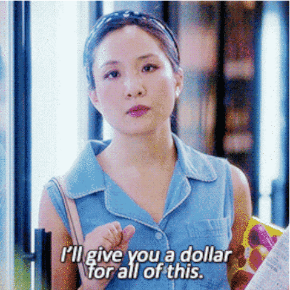

Millennials with digital devices, Source: The Telegraph
Managing Grown-Up Expenses; Millennial Style
May 17, 2018
The freedom that comes with reaching a certain age where you can finally move out of your parent’s home to be on your own is simply amazing, it comes first with no Parents, no disturbing siblings, no curfews, freedom to play loud music without getting complains and in my own case finally being able to tell my mum some silly words without getting yelled at, that was a major breakthrough for me.
But of course, with growing up comes much more responsibilities and as some of my friends already pointed out “Growing up is a scam, they never told me I’ll have to pay for everything by myself”, I can’t remember the last time I was dashed money by any of my Uncles/Aunts, they all just say “Damola, you’re now a big girl o” without slipping any cash in my hand, just so you all know, I’m a small girl in need of extra cash to waste on “guilty pleasure” food.
And of course, being Millennials (born between 1980–2000), studies have shown that we have high chances of spending much more than our parents did while they were young. Below, I’ve highlighted some growing up expenses and how best it could be managed, millennial style.
Renting an Apartment:
Small but stylish apartment. Source: iprights.co
Well, getting an apartment rhymes with spending money and in some cases spending more money. Millennials has been described as a set of people with fancy taste in living and I speak for myself and some of my friends that this is absolutely true so if you live in cities like Abuja & Lagos where rent spaces are ridiculously expensive, best option out of this expense is getting an apartment that’s not too spacious as it is expected to be less expensive. Also getting yourself a roommate whom you can share the cost together with might just as well be a life saver.
N.B: There’s almost no point renting an apartment with more space than you actually need except you’re getting married soon, so do yourself some good by reducing the expenses in the best possible way you can.
Hanging Out:
Young people drinking while hanging out. Source: Google
Studies have shown that Millennials are liberal people who enjoy sociable events, going out with friends, cinema hang outs, weekend getaways amongst others, in other words, we have a strong sense of community/being a part of a group, I’m partly guilty of this and if you’re one that enjoys watching Hollywood movies, the idea of a young lady/guy taking a glass of Martini/Scotch or an expensive wine while hanging out with friends might have creeped into your mind. I literally practice the whole Martini thingy with my glass of water or juice, creepy I know. My point exactly is, while hanging out is cool & important to maintain social relationships, going overboard doesn’t necessarily make you “more grown-up”, it might just make you “more in-debt”. Besides, there are other indoor activities that could be engaging and won’t pull out a penny out of your purse, one I personally do is watch movies & TV shows endlessly (been watching The Daily Show with Trevor Noah lately)and I also intend to watch the Royal wedding this weekend. Just find your thing.
Fancy Wardrobe:
Jessica Pearson played by Gina Torres, my fashion Black Panther. Source: Google
Speaking of how movies can influence the way you act or in this case the way you dress, watching several episodes of SUITS back to back made me feel like I was Jessica Pearson only without the fancy clothes. As we grow older, there’s this natural instinct that comes with wanting to dress fancier which is absolutely okay. However, dealing with this especially in cases where cash is not necessarily on your side is to buy clothing items that fit for if not all but most purposes be it a wedding occasion, office wear & even casual wear and yet looking great.
No Last Price:
Bargaining skills. Source: Fresh Off the Boat
Some people I’ve heard have associated not pricing items with being a grown-up or even being cool, Heck no! except you’re a regular in fixed prices stores. Other than that, the reason a seller gives you a first price is because you’re expected to beat down the initial price. Every item has a last price and increasing your bargaining skills might just save you some cash.
Ceremonies AKA Owambe:
Simi & Odunlade. Source: Owambe by Simi
Anyone between ages 21–35 definitely has friends, work buddies or acquaintances celebrating marital bliss and with this comes other attached events such as wedding showers, bachelor/bachelorette parties all of which didn’t become an expensive necessity until few years ago. The key is maintaining your cool as possible, ranking events based on priority and choosing the ones that are most important to attend. You can’t find Mr/Mrs Right in all parties (chuckles).
Digital Natives
Dream work desk. Source: Pinterest
Millennials are generally marked by increased familiarity with digital technology and media so it’s not so surprising if anyone is addicted to social media since its been a part of our lives for a good chunk of our existence.
Expenses on getting new gadgets (which I’m currently facing), data subscription, other subscription (DStv, Netflix, Spotify, Dropbox) amongst others are also important costs we have to bear.
If you realize you don’t use up the subscription before its expiration date, that might be your cue to stop subscribing for whatever it is. In addition, selecting the ones that seems the “most important” and taking up the courage to ignore the “not so important” can go a long way in minimizing costs.
Thanks to you guys for reading up again, if you have any challenging grown-up expenses you’ll like share, kindly leave in the comments below. Gracias, Buenos dias (Good day).
.png)